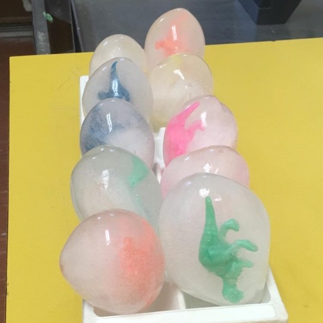
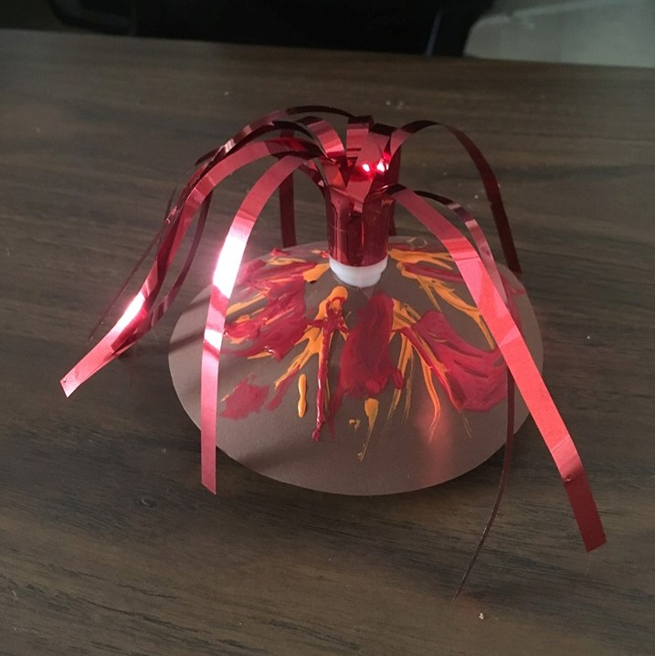

Canada South Science City is a registered not-for-profit interactive science centre located in Windsor, Ontario. Science City has spent time at Market Square, on Marion Ave, and we are now located on Felix Ave at the former J.L.Forster High School.
The mission of Canada South Science City is to advance the understanding and appreciation of science, its principles, and applications, for residents and visitors of Southwestern Ontario, through the operation of a hands-on science centre incorporating
The history of Canada South Science City:
1992
Tom Toth, high school teacher and administrator, and then City Councillor, brought proposals before the City Council to open a Scinece Center.
1995
A printed brochure dated July 31, 1995 lists Tom Toth, David Cassivi, Roy James and Rod Peturson as the Founding Directors of an organization to establish a science and technology centre for Windsor.
1996
Council approves the creation of a Science & Technology Center Steering Comittee comprised of two members of Council and three citizens.
1995
A $48,780 study was completed affirming that there was a need for additional family-oriented recreation/educational facilities in Windsor and that the need extended beyond that of science to include local, cultural, and historical subjects.
1999
Toth organized contruction at the Market Square and the ribbon was cut later that year, having built the center at a fraction of the projected cost.
2001
"SciTech Exploratium received a three-year grant for $300,000 from the Ministry of Evergy, Science, and Technology and became a member of the Canadian Association of Science Centres.
2002
Won a three-year Trillium grant for $225,000.
2003
The City purchased the former DeSantis school property at 930 Marion.
2004
Canada South Science City opened to the public during March break after extensive period of set-up. With the support of MP Brian Masse, on April 1, 2004, CSSC became registered as an independent not-for-profit organization.
2005
Council supported science city waiving by-laws allowing for many new exhibits. Chris Hadfield visits the center!
2006
First Science Cafe was succesfully held and a major Climate Change exhibit was opened thanks to Science North.
2007
Another exibit was donated from the Great Lakes Institute of Environmental Research and the Great Lakes Institure for Environmental Research.
2009
A large exhibit loan from the Canadian Space Agency opened.
2010
Recieved an award for community achievement from Windsor Working with Immigrant Women.
2011
The Ministry of Transport of Ontario opened the Windsor-Essex Parkway exhibit at the Science City.
2013
Dr. David Suzuki presented Canada South Science City with the Canvas Campus Mother Earth Award "for activism in support of people's rights, our communities, and our Earth."
2014
Canada South Science City moved to a new location at the former J.L.Forster high school.
STEAM related science day camp full of hands on activities and engaging and educational workshops!
Ages 5 - 12 Years Old
July 2nd - August 30th 2019
Monday - Friday: 9:00 AM - 5:00 PM
$35/day OR $150/week
 Call today or register online:
Early drop off and late pick-up is available.
Bring water, a lunch, snacks, and sunscreen
Everyday at camp includes at least 5 experiments, several high-energy or low-energy activities and educational moments to foster your child's curiosity in science!